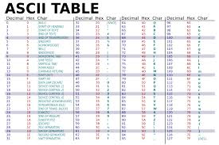
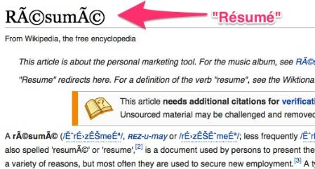

Text Was a Problem Long Before AI
The overlooked history that explains why tokenisation exists at all
I remember watching The Imitation Game and feeling impressed in the way you are supposed to feel. There were brilliant people, impossible constraints, war-time urgency, and machines doing clever things. It felt important, but also distant.
At no point did it feel like a story about text.
Much later, I visited the Alan Turing memorial in Manchester. And I remember standing there longer than I expected to. Reading the plaque. Looking at the statue. Thinking about how casually I interact with computers every single day.
I type messages. I read articles. I search documents. I ask machines questions and expect answers written in language.
Standing there, something uncomfortable started to surface. Not about intelligence. Not about learning. About something far more basic.

From the internet. I realised later that I am terrible at taking photos.
We talk today about language models, understanding, reasoning, intelligence. But all of that quietly assumes something much stranger underneath. That text can even enter a machine in the first place.
That assumption is so deeply baked into modern computing that we rarely notice it. Text editors. Terminals. Browsers. Chat interfaces. Everything begins with text, so it feels fundamental.
But it is not.
Text is vague. Contextual. Deeply human. The same sentence can mean different things depending on who reads it, when they read it, and why.
Machines, on the other hand, are rigid. They operate on exact states. Exact transitions. Exact rules.
There is no obvious meeting point between these two worlds.
When people like Turing were thinking about machines, they were not starting with language. They were starting with limits. With logic. With what could be mechanised and what could not.
There was no reason to believe that words would ever fit into that framework. No reason to believe that sentences, explanations, or meaning itself could survive inside something built to manipulate precise states.
And yet, here we are.
We now live in a world where machines process text so fluently that we forget how unnatural this entire journey has been.
We forget that before machines could learn language, they first had to be made compatible with it.
What a computer originally was
To really understand why text did not naturally belong inside machines, it helps to rewind the meaning of the word computer itself. For a long time, it had nothing to do with electronics, screens, or software. A computer was a person. Someone whose job was to compute. They sat with tables, notebooks, slide rules, and formulas, carefully and repeatedly turning mathematics into numbers by hand. The output was not insight or explanation. It was numbers.
When machines finally appeared, they were built to take over exactly this task. Not thinking. Not understanding. Just computation. The goal was to remove human error and human fatigue from repetitive calculation. Nothing about their design assumed language. There was no expectation that a machine would ever need to read, write, or interpret words. That idea simply did not exist yet.
The world these machines were built for
The earliest electronic and electromechanical computers were born into a very specific environment. They were built for ballistics calculations, trajectory prediction, logistics planning, and later, weather modeling. These were problems that already lived comfortably inside mathematics. The inputs were numbers. The outputs were numbers. The value of the machine lay entirely in how quickly and reliably it could move from one to the other.
There were no documents to process. No explanations to generate. No questions to answer. The surrounding world of these machines was not linguistic. It was quantitative. When we imagine early computers struggling with language, it is tempting to think of that as a limitation. But in context, language was not missing. It was irrelevant.

When you look at these machines, with their rooms of cables, glowing vacuum tubes, and mechanical relays, it becomes clear that this is not just about old technology. It is about a worldview. These systems were not built as general reasoning devices. They were built as engines for numerical transformation. Asking them to deal with text would have been like asking a calculator to understand a poem. Not because it was bad at poetry, but because poetry had no place in its universe.
Inside the machine
Inside these early machines, there were no letters waiting to be discovered. No words hiding beneath the surface. There were only states. Voltages moving through circuits. Switches being flipped. Counters incrementing and resetting. Everything the machine interacted with had to be exact, measurable, and unambiguous. Ambiguity was not just inconvenient. It was fatal.
From the machine’s point of view, the world consisted of operations like addition and subtraction, multiplication, conditional branching, and table lookups. That was the entire universe. Anything that mattered had to be expressed in that form. Anything that could not be expressed that way simply did not exist.
If you had tried to hand one of these machines a paragraph of English, it would not have rejected it. It would not have misunderstood it. It would have no way to even recognise that you had provided input. Language did not fail inside early machines. Language never entered them in the first place.
This is the part we forget
This is the part that is easy to miss when looking backward from the present. Modern machines did not start out bad at language and slowly improve. They started out in a world where language did not exist at all. Text was not something they struggled with. It was something they were never designed to encounter.
Language had to be forced into a system that only understood quantities. It had to be reshaped, compressed, and constrained until it could survive inside a numerical world. And that process did not begin with learning or intelligence. It began with a much simpler problem.
Humans had already faced this problem once before. Not with computers, but with wires.
Language meets the wire
Long before computers ever existed, humans had already stumbled into the same problem. Not in laboratories or universities, but stretched across vast distances.
How do you send language through a system that does not understand language?
The telegraph made this question impossible to ignore. A wire does not know letters. It does not know words. It does not know meaning.
All it knows how to do is carry electrical signals. On. Off. Pulse. Silence.
If language was going to travel through a wire, it would have to change first.
Reduction, not understanding
Morse code was the first honest response to this constraint. Not an attempt to teach the wire what language meant, but an acceptance that meaning would never live inside the system itself.
Letters were stripped of their visual form. They were stripped of their sound. They were stripped of anything that made them feel like language.
What remained were patterns of time. Short signals. Long signals. Gaps.
Dots and dashes were not chosen because they represented letters well. They were chosen because they survived noise. They could be detected reliably across distance. They could be reconstructed by a human on the other end.

Language survives only after being reduced to signals.
This is an important moment. Not because it was clever, but because it set a pattern that never went away.
The wire did not participate in meaning. It did not know that a dash was a letter. It did not know that a letter formed a word.
Meaning was removed at the source and reconstructed at the destination.
Forcing language into fixed shapes
Later systems like Baudot code pushed this idea even further. Language was no longer just reduced. It was constrained.
Each character was forced into a fixed-length pattern, whether it fit naturally or not. Efficiency mattered. Uniformity mattered. Flexibility did not.
This was not about capturing nuance or meaning. It was about making language compatible with machinery.
Every character had to look the same to the system. Same length. Same structure. Same rules.
What was gained was reliability. What was lost was everything else.
Reduction was never the hard part
By the time electronic computers became widespread, something important had already been settled without much debate. Humans had accepted that language would never enter machines as language. It would have to be reduced. Encoded. Stripped of everything that made it flexible or ambiguous. That lesson had been learned through wires, signals, and distance, long before computers ever appeared.
So when computers arrived, it felt reasonable to assume that the difficult part was over. Language had been reduced into symbols. Symbols could be represented as numbers. Numbers were exactly what machines were good at handling. From a distance, it looked like a clean handoff. Transmission had worked. Storage would work too.
What nobody expected was that reduction alone would turn out to be the easy part.
When every machine spoke its own dialect
Early computers did not enter a shared world of text. Each machine arrived with its own assumptions about how symbols should be represented. How many bits a character deserved. Which patterns mapped to which letters. What counted as a valid symbol and what did not. These choices were shaped by hardware limits, memory constraints, and local convenience, not by any global plan.
The result was a landscape of mutually incompatible systems. The same sequence of bits could represent different characters on different machines. A document created on one system might partially survive on another, or collapse into something unrecognisable. Text could be stored reliably inside a single machine, yet fail the moment it tried to move.
This fragility was unsettling precisely because nothing was obviously broken. The machines were precise. The data was intact. The failure happened in the space between systems, where assumptions disagreed.

Text that could not survive migration.
For the first time, it became clear that text inside machines was not just a technical problem. It was a social one. Machines did exactly what they were told. Meaning was what failed to travel.
ASCII and the power of agreement
ASCII did not emerge as a breakthrough in representation. It emerged as an act of coordination. Seven bits. One table. A small, carefully chosen set of characters. It was not ambitious. It did not try to capture language in its richness. It simply tried to make sure that when one machine said “A,” another machine would hear the same thing.
What ASCII offered was not expressiveness, but alignment. If everyone agreed that a particular pattern of bits represented a particular character, then text could finally move. Files could be shared. Programs could be transferred. Documents could survive migration without quietly falling apart.

ASCII worked not because it understood language, but because it stabilised expectations. For the first time, machines shared a common reference for symbols. That was enough to make computing practical at scale.
For a while, that distinction did not seem important. Most computing happened in English. The world adapted itself to the limits of the table.
When assumptions stopped holding
The illusion began to break as soon as computing escaped its original cultural boundaries. Different systems made different assumptions about encodings. About how many bytes represented a character. About where one symbol ended and the next began. The same stream of bytes could be interpreted in incompatible ways, depending entirely on context.
Nothing had changed at the level of data. The bytes were identical. What changed was interpretation. And once interpretation diverged, meaning collapsed into visual noise.

Meaning dissolves when assumptions diverge.
This failure was revealing. It showed that even perfect reduction and widespread agreement were not enough. Text could now live inside machines, be transmitted reliably, and be stored indefinitely. And yet, nothing in this system helped machines do anything with it.
Representation had been solved just well enough to keep symbols intact. But symbols alone do not create structure. They do not express relationships. They do not carry context. Machines could store text, but they still had no way to engage with it.
That gap would eventually force a new kind of question. Not about transmission. Not about storage. But about learning.
Unicode and the promise of closure
After decades of fragile agreements and quiet failures, it became clear that text inside machines needed something more permanent. ASCII had brought coordination, but only by pretending the world was much smaller than it actually was. As computing spread beyond its original cultural boundaries, the cracks were no longer edge cases. They were everywhere.
Different languages needed different symbols. Different scripts needed entirely different assumptions. Accents, ligatures, non-Latin alphabets, and writing systems that flowed in directions ASCII never imagined all demanded space inside machines. The idea that one small table could stand in for human language was no longer sustainable.
Unicode emerged as an attempt to end this uncertainty once and for all.
Every character gets a number
The core idea behind Unicode was deceptively simple. Every character used by humans would be assigned a unique numerical identity. Not a font. Not a visual shape. A number. That number would mean the same thing everywhere, regardless of machine, operating system, or location.
For the first time, text inside machines could be globally consistent. A character created on one system could be transmitted across the planet and still be interpreted the same way on the other side. Representation stopped being a local convention and became a shared global agreement.

In many ways, this was an extraordinary achievement. Unicode solved a problem that had quietly haunted computing since its earliest days. Text no longer dissolved when it crossed systems. Characters no longer depended on hidden assumptions. For the first time, machines could reliably store and transmit written language at planetary scale.
What Unicode actually gives us
But it is important to be precise about what Unicode solved and what it did not.
Unicode assigns symbols numbers. It does not assign meaning. Two characters may be related in a language. They may form a word together. They may carry grammatical or semantic relationships. None of that exists in the code points themselves.
From the machine’s perspective, Unicode characters are still isolated integers. They sit next to each other in memory, but they do not know why. The number representing a letter has no awareness of the word it belongs to. The number representing a word has no awareness of the sentence it forms.
This distinction is easy to miss because Unicode works so well at what it does. Text renders correctly. Documents survive transmission. Languages coexist peacefully inside machines. The system feels complete.
But nothing about Unicode tells a machine that two characters form a unit, that one word relates to another, or that a sentence carries intent. All of that still lives entirely outside the system, reconstructed by humans who already understand language.
Symbols without relationships
At this point, machines finally had a stable way to hold text. Every symbol had a number. Every number was globally agreed upon. Representation, in the narrowest sense, was solved.
And yet, something fundamental was still missing.
Numbers existed, but relationships did not. Characters were present, but structure was absent. Machines could store text forever without learning anything from it.
Unicode gave machines a place to keep language. It did not give them a way to work with it. It did not tell them which pieces of text mattered together, which patterns repeated, or which variations were meaningful.
That gap would eventually force a shift in thinking. Away from representation. Away from storage. Toward something else entirely.
Not how text should be encoded. But how a machine could begin to see patterns inside it.
When storing text was no longer the goal
For a long time, text inside machines was treated as something inert. Something to be stored, transmitted, and displayed correctly. Unicode solved that problem almost completely. Every character had a number. Those numbers were globally agreed upon. Text stopped breaking when it moved across systems.
That success quietly shaped our intuition. It became easy to believe that once text had numbers, machines finally had what they needed.
That assumption held until we started asking machines to learn from text.
Learning changes the nature of the problem. A learning system is not satisfied with preserving symbols. It is trying to discover patterns. It is trying to notice what repeats, what varies, and what tends to occur together.
And at that moment, something important becomes visible. Unicode gives machines symbols, but it gives them no guidance about structure.
What Unicode text actually looks like to a machine
Let us slow this down with a concrete example.
Take three simple words: cat, car, and dog.
To a human, these words do not feel equally related. Cat and car share letters. They look similar. Cat and dog share meaning. They are both animals.
Now imagine how a machine sees these same words under Unicode.
Each character is just a number. So the machine sees something like this:
cat becomes three numbers, one for c, one for a, one for t.
car becomes three numbers, one for c, one for a, one for r.
dog becomes three numbers, one for d, one for o, one for g.
From the machine’s point of view, these are just sequences of integers. There is nothing in this representation that says “these first two words are similar in form” or “these two words are related in meaning”.
The only thing that is immediately visible is that cat and car share two identical numbers at the beginning. That similarity exists purely because of spelling.
The relationship between cat and dog, which feels far more meaningful to us, is completely invisible at this level.
Why this is a problem for learning
A learning system does not know what it should care about. It only knows how to adjust itself based on error.
If the representation highlights the wrong similarities, the system will learn the wrong things first.
At the character level, cat looks more similar to car than to dog. So a learner is encouraged to focus on shared letters, even when those letters have nothing to do with meaning.
The learner is not wrong to do this. It is responding exactly to the information it has been given.
The problem is not the model. The problem is the view of the data.
To eventually learn that cat and dog are related, the system has to see many sentences, observe many contexts, and slowly infer that these two words behave similarly, despite sharing no characters.
This is possible. But it is inefficient. And it pushes the burden of discovering basic structure entirely onto the learning algorithm.
What we actually want the learner to see
When humans look at language, we do not start from characters. We start from units that feel stable. Words. Fragments. Repeated pieces.
We want a learner to notice that cat is a unit. That dog is a unit. That these units tend to appear in similar contexts.
We want the learner to build relationships at that level, not rediscover letters from scratch.
This does not mean spelling is irrelevant. It means spelling should not dominate the learner’s early view of the data.
Instead of feeding the model a flat stream of characters, we want to present text in chunks that expose regularities sooner. Pieces that repeat. Pieces that recombine. Pieces that carry statistical weight.
Why tokenisation exists
This is the gap tokenisation fills.
Tokenisation does not replace Unicode. Unicode still assigns numbers to symbols. Tokenisation sits on top of that and reorganises text into units that are useful for learning.
Now cat can be treated as a single unit. Dog can be treated as a single unit. Common fragments can be reused across words. Rare words can be broken into parts that still carry signal.
The goal is not to encode meaning directly. The goal is to expose structure in a way that a learning system can exploit efficiently.
This is the first moment in the story where numbers are chosen deliberately to make learning easier, rather than simply to make text fit inside a machine.
Once this shift happens, everything else follows naturally.
But none of those ideas make sense until we understand why the learner’s view of text matters so much.
Comments